핏 아카이브
매일 남자 코디 2개 · 영상 속 코디 정보는 전부 여기
코디 가이드
겨울 남자 신발 고르는 법 — 첼시 부츠·워커·스니커즈첼시 부츠, 워커 부츠, 더비, 겨울 스니커즈의 특징과 어울리는 코디, 눈길·빗길 관리 요령을 정리했습니다.영하권 출근룩, 얇게 여러 겹 입는 레이어드 공식영하로 떨어지는 날에도 둔해 보이지 않게 입는 남자 출근룩 레이어드 방법을 이너·미드·아우터 3단계로 정리했습니다.체형별 남자 바지 핏 고르는 법 — 슬랙스·데님·코듀로이스트레이트, 와이드, 테이퍼드 핏의 차이와 체형별로 어울리는 바지, 기장 맞추는 기준을 정리했습니다.
가이드 전체 보기 ›코디 정보
 데일리룩 4주말에 입기 좋은 2026년 남자 겨울 코디 no.4511월 27일 · #겨울 코디
데일리룩 4주말에 입기 좋은 2026년 남자 겨울 코디 no.4511월 27일 · #겨울 코디 주제별룩 4차분하게 멋있는 남자 겨울 네이비 코디11월 27일 · #네이비
주제별룩 4차분하게 멋있는 남자 겨울 네이비 코디11월 27일 · #네이비 피드룩 4크리스마스에 입기 좋은 남자 겨울 코디 4가지11월 27일 · #크리스마스
피드룩 4크리스마스에 입기 좋은 남자 겨울 코디 4가지11월 27일 · #크리스마스 데일리룩 4패션 참고하기 좋은 2026년 남자 겨울 코디 no.4411월 26일 · #겨울 코디
데일리룩 4패션 참고하기 좋은 2026년 남자 겨울 코디 no.4411월 26일 · #겨울 코디 주제별룩 4코트 안에 입기 좋은 남자 겨울 가디건 코디11월 26일 · #가디건
주제별룩 4코트 안에 입기 좋은 남자 겨울 가디건 코디11월 26일 · #가디건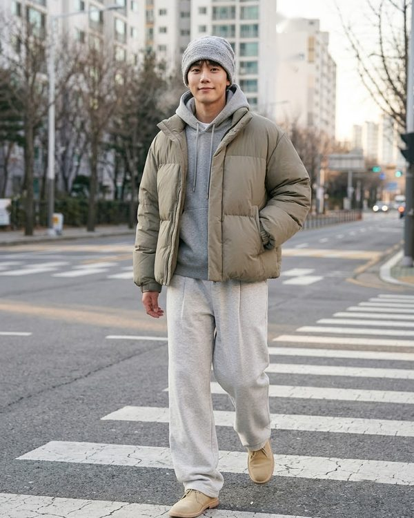
데일리룩 4한파에도 멋있는 2026년 남자 겨울 코디 no.4311월 25일 · #겨울 코디 주제별룩 4니트에 셔츠 하나로 끝나는 남자 겨울 레이어드 코디11월 25일 · #니트 셔츠 레이어드
주제별룩 4니트에 셔츠 하나로 끝나는 남자 겨울 레이어드 코디11월 25일 · #니트 셔츠 레이어드 피드룩 4영하에도 멋있게 남자 겨울 아우터 4가지11월 25일 · #겨울 아우터
피드룩 4영하에도 멋있게 남자 겨울 아우터 4가지11월 25일 · #겨울 아우터 데일리룩 4캡처해두면 좋은 2026년 남자 겨울 코디 no.4211월 24일 · #겨울 코디주제별룩 4다리 길어 보이는 남자 겨울 배기 데님 코디11월 24일 · #배기 데님
데일리룩 4캡처해두면 좋은 2026년 남자 겨울 코디 no.4211월 24일 · #겨울 코디주제별룩 4다리 길어 보이는 남자 겨울 배기 데님 코디11월 24일 · #배기 데님 데일리룩 4센스 있다 소리 듣는 2026년 남자 겨울 코디 no.4111월 23일 · #겨울 코디
데일리룩 4센스 있다 소리 듣는 2026년 남자 겨울 코디 no.4111월 23일 · #겨울 코디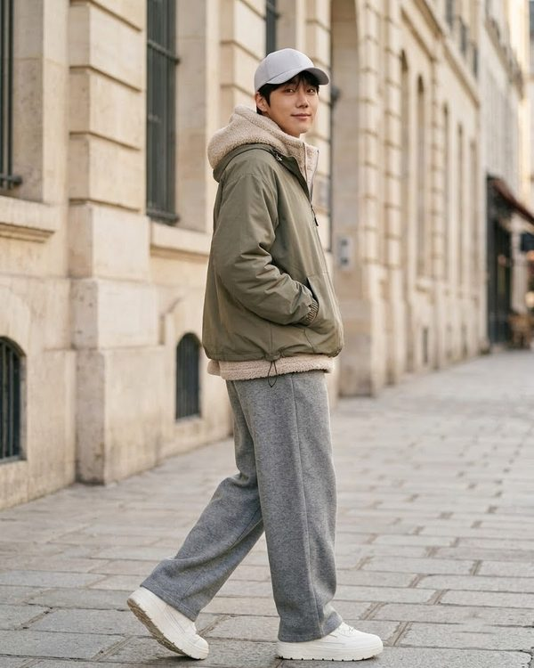
주제별룩 4찬바람 부는 날 딱 좋은 남자 겨울 바람막이 코디11월 23일 · #바람막이 피드룩 4연말 모임에 같이 입기 좋은 겨울 커플룩 4가지11월 23일 · #커플룩
피드룩 4연말 모임에 같이 입기 좋은 겨울 커플룩 4가지11월 23일 · #커플룩 데일리룩 4요즘 옷 잘 입는 2026년 남자 겨울 코디 no.4011월 22일 · #겨울 코디
데일리룩 4요즘 옷 잘 입는 2026년 남자 겨울 코디 no.4011월 22일 · #겨울 코디 주제별룩 4꾸안꾸 끝판왕 남자 겨울 후드집업 코디11월 22일 · #후드집업
주제별룩 4꾸안꾸 끝판왕 남자 겨울 후드집업 코디11월 22일 · #후드집업 데일리룩 4따라 입기만 하면 되는 2026년 남자 겨울 코디 no.3911월 21일 · #겨울 코디
데일리룩 4따라 입기만 하면 되는 2026년 남자 겨울 코디 no.3911월 21일 · #겨울 코디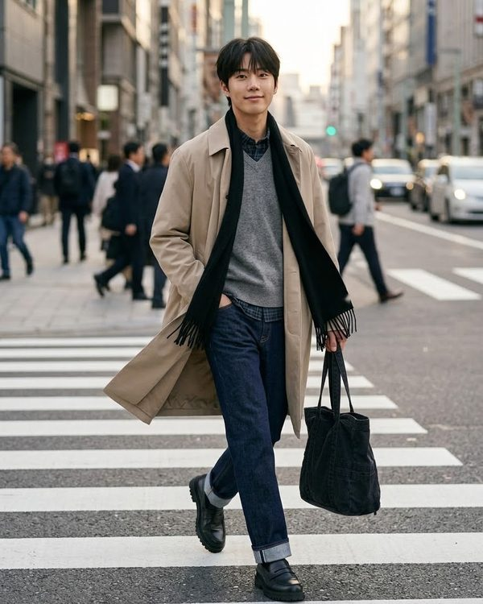
주제별룩 4깔끔한데 분위기 있는 남자 겨울 맥코트 코디11월 21일 · #맥코트 피드룩 4옷 잘 입는 남자의 겨울 레이어드 공식 4가지11월 21일 · #레이어드
피드룩 4옷 잘 입는 남자의 겨울 레이어드 공식 4가지11월 21일 · #레이어드 아이템룩 4그레이 슬랙스 하나로 끝나는 남자 겨울 코디11월 20일 · #그레이 슬랙스
아이템룩 4그레이 슬랙스 하나로 끝나는 남자 겨울 코디11월 20일 · #그레이 슬랙스 데일리룩 4실패 없는 2026년 남자 겨울 코디 no.3811월 20일 · #겨울 코디
데일리룩 4실패 없는 2026년 남자 겨울 코디 no.3811월 20일 · #겨울 코디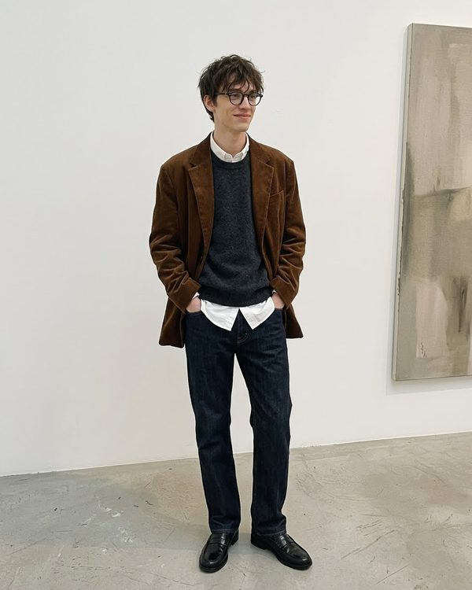
주제별룩 4분위기 있는 남자 겨울 코듀로이 코디11월 20일 · #코듀로이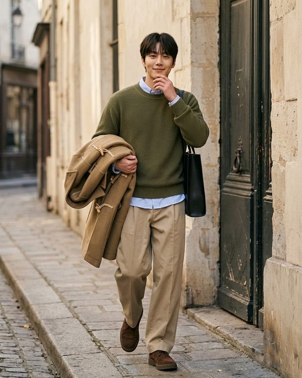
아이템룩 4옥스포드 셔츠에 잘 어울리는 남자 겨울 코디 4가지11월 19일 · #옥스포드 셔츠 데일리룩 4패션 참고하기 좋은 2026년 남자 겨울 코디 no.3711월 19일 · #겨울 코디
데일리룩 4패션 참고하기 좋은 2026년 남자 겨울 코디 no.3711월 19일 · #겨울 코디 주제별룩 4세련돼 보이는 남자 겨울 그레이 코디11월 19일 · #그레이
주제별룩 4세련돼 보이는 남자 겨울 그레이 코디11월 19일 · #그레이 피드룩 4크리스마스 마켓 가는 날 같이 입기 좋은 커플룩 4가지11월 19일 · #커플룩
피드룩 4크리스마스 마켓 가는 날 같이 입기 좋은 커플룩 4가지11월 19일 · #커플룩 아이템룩 4헤링본 코트 하나로 끝나는 남자 겨울 코디11월 18일 · #헤링본 코트
아이템룩 4헤링본 코트 하나로 끝나는 남자 겨울 코디11월 18일 · #헤링본 코트 데일리룩 4캡처해두면 좋은 2026년 남자 겨울 코디 no.3611월 18일 · #겨울 코디
데일리룩 4캡처해두면 좋은 2026년 남자 겨울 코디 no.3611월 18일 · #겨울 코디 주제별룩 4분위기 확 사는 남자 겨울 체크 셔츠 코디11월 18일 · #체크 셔츠
주제별룩 4분위기 확 사는 남자 겨울 체크 셔츠 코디11월 18일 · #체크 셔츠 아이템룩 4숏패딩에 잘 어울리는 남자 겨울 코디 4가지11월 17일 · #숏패딩
아이템룩 4숏패딩에 잘 어울리는 남자 겨울 코디 4가지11월 17일 · #숏패딩 데일리룩 4옷 잘 입는 남자들의 2026년 남자 겨울 코디 no.3511월 17일 · #겨울 코디
데일리룩 4옷 잘 입는 남자들의 2026년 남자 겨울 코디 no.3511월 17일 · #겨울 코디 주제별룩 4실패 없는 남자 겨울 브라운 코디11월 17일 · #브라운
주제별룩 4실패 없는 남자 겨울 브라운 코디11월 17일 · #브라운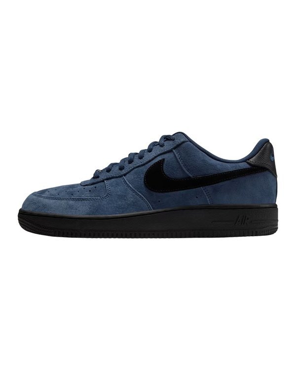
발매발매 511월 셋째 주 신발 발매 소식11월 16일 · #발매정보 아이템룩 4워크 부츠 하나로 끝나는 남자 겨울 코디11월 16일 · #워크 부츠
아이템룩 4워크 부츠 하나로 끝나는 남자 겨울 코디11월 16일 · #워크 부츠 데일리룩 4센스 있다 소리 듣는 2026년 남자 겨울 코디 no.3411월 16일 · #겨울 코디
데일리룩 4센스 있다 소리 듣는 2026년 남자 겨울 코디 no.3411월 16일 · #겨울 코디 주제별룩 4깔끔하게 멋 내는 남자 겨울 로퍼 코디11월 16일 · #로퍼
주제별룩 4깔끔하게 멋 내는 남자 겨울 로퍼 코디11월 16일 · #로퍼 아이템룩 4머플러 하나로 끝나는 남자 겨울 코디11월 15일 · #머플러
아이템룩 4머플러 하나로 끝나는 남자 겨울 코디11월 15일 · #머플러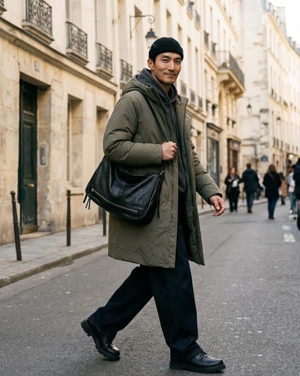
데일리룩 4따라 입기 좋은 2026년 남자 겨울 코디 no.3311월 15일 · #겨울 코디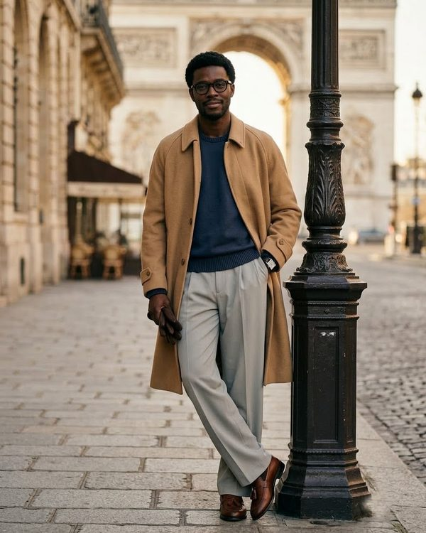
주제별룩 4깔끔한데 멋있는 남자 겨울 슬랙스 코디11월 15일 · #슬랙스아이템룩 4스웨이드 자켓에 잘 어울리는 남자 코디 4가지11월 14일 · #스웨이드 자켓 데일리룩 4캡처해두면 좋은 2026년 남자 겨울 코디 no.3211월 14일 · #겨울 코디
데일리룩 4캡처해두면 좋은 2026년 남자 겨울 코디 no.3211월 14일 · #겨울 코디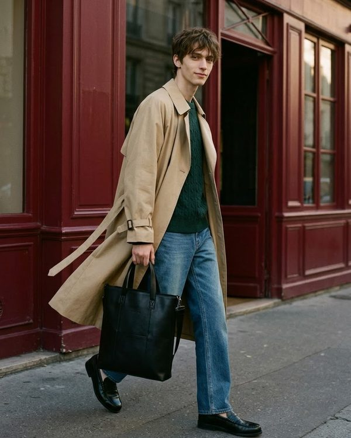
주제별룩 4분위기 있는 남자 겨울 트렌치코트 코디11월 14일 · #트렌치코트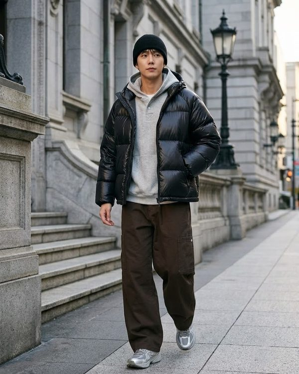
아이템룩 4카고 팬츠 하나로 끝나는 남자 겨울 코디11월 13일 · #카고 팬츠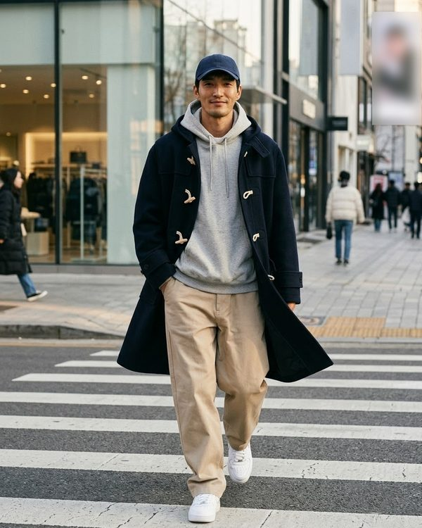
데일리룩 4주말에 바로 입기 좋은 2026년 남자 겨울 코디 no.3111월 13일 · #겨울 코디 주제별룩 4단정한데 힙한 남자 겨울 블레이저 코디11월 13일 · #블레이저
주제별룩 4단정한데 힙한 남자 겨울 블레이저 코디11월 13일 · #블레이저 피드룩 4머플러 하나로 겨울 분위기 바꾸는 법 4가지11월 13일 · #머플러
피드룩 4머플러 하나로 겨울 분위기 바꾸는 법 4가지11월 13일 · #머플러 아이템룩 4피셔맨 니트 하나로 끝나는 남자 겨울 코디11월 12일 · #피셔맨 니트
아이템룩 4피셔맨 니트 하나로 끝나는 남자 겨울 코디11월 12일 · #피셔맨 니트 데일리룩 4오늘 뭐 입지 싶을 때 보는 2026년 남자 겨울 코디 no.3011월 12일 · #겨울 코디
데일리룩 4오늘 뭐 입지 싶을 때 보는 2026년 남자 겨울 코디 no.3011월 12일 · #겨울 코디 주제별룩 4분위기 확 사는 남자 겨울 가죽자켓 코디11월 12일 · #가죽자켓
주제별룩 4분위기 확 사는 남자 겨울 가죽자켓 코디11월 12일 · #가죽자켓 아이템룩 4발마칸 코트 하나로 끝나는 남자 겨울 코디11월 11일 · #발마칸 코트
아이템룩 4발마칸 코트 하나로 끝나는 남자 겨울 코디11월 11일 · #발마칸 코트 데일리룩 4이번 주에 바로 입는 2026년 남자 겨울 코디 no.2911월 11일 · #겨울 코디
데일리룩 4이번 주에 바로 입는 2026년 남자 겨울 코디 no.2911월 11일 · #겨울 코디 주제별룩 4멋 좀 아는 남자 겨울 블랙 데님 코디11월 11일 · #블랙 데님
주제별룩 4멋 좀 아는 남자 겨울 블랙 데님 코디11월 11일 · #블랙 데님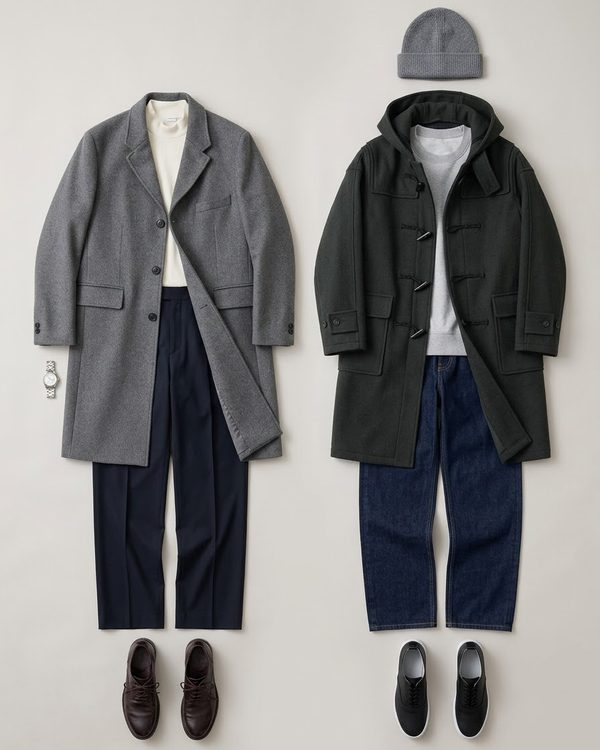
피드룩 4출근룩 vs 주말룩, 겨울 남자 코디 4가지11월 11일 · #출근룩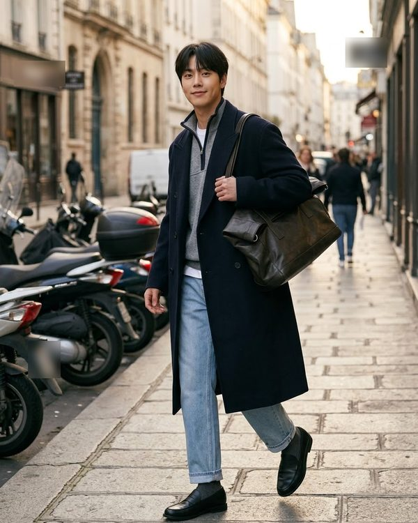
아이템룩 4페니 로퍼 하나로 끝나는 남자 겨울 코디11월 10일 · #페니 로퍼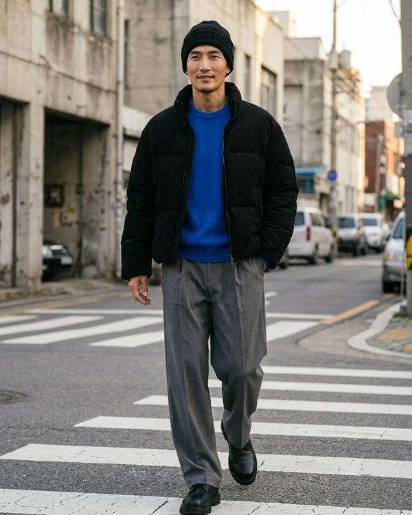
데일리룩 4실패 없는 조합만 모은 2026년 남자 겨울 코디 no.2811월 10일 · #겨울 코디 주제별룩 4차분한데 멋있는 남자 겨울 네이비 코디11월 10일 · #네이비
주제별룩 4차분한데 멋있는 남자 겨울 네이비 코디11월 10일 · #네이비 아이템룩 4첼시 부츠 하나로 끝나는 남자 겨울 코디11월 9일 · #첼시 부츠
아이템룩 4첼시 부츠 하나로 끝나는 남자 겨울 코디11월 9일 · #첼시 부츠 데일리룩 4캡처해두면 좋은 2026년 남자 겨울 코디 no.2711월 9일 · #겨울 코디
데일리룩 4캡처해두면 좋은 2026년 남자 겨울 코디 no.2711월 9일 · #겨울 코디 주제별룩 4센스 있다 소리 듣는 남자 겨울 가디건 코디11월 9일 · #가디건
주제별룩 4센스 있다 소리 듣는 남자 겨울 가디건 코디11월 9일 · #가디건 피드룩 4겨울 데이트에 같이 입기 좋은, 커플룩 4가지11월 9일 · #커플룩
피드룩 4겨울 데이트에 같이 입기 좋은, 커플룩 4가지11월 9일 · #커플룩 아이템룩 4셀비지 데님 하나로 끝나는 남자 겨울 코디11월 8일 · #셀비지 데님
아이템룩 4셀비지 데님 하나로 끝나는 남자 겨울 코디11월 8일 · #셀비지 데님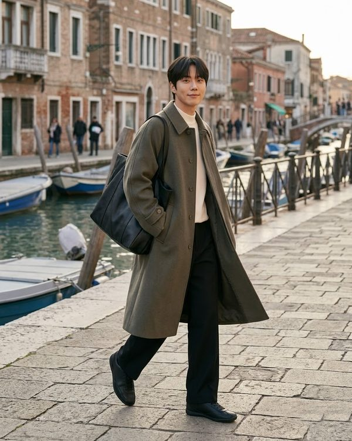
데일리룩 4따라 입기 좋은 2026년 남자 겨울 코디 no.2611월 8일 · #겨울 코디 주제별룩 4실패 없는 남자 겨울 니트 셔츠 레이어드 코디11월 8일 · #니트 셔츠
주제별룩 4실패 없는 남자 겨울 니트 셔츠 레이어드 코디11월 8일 · #니트 셔츠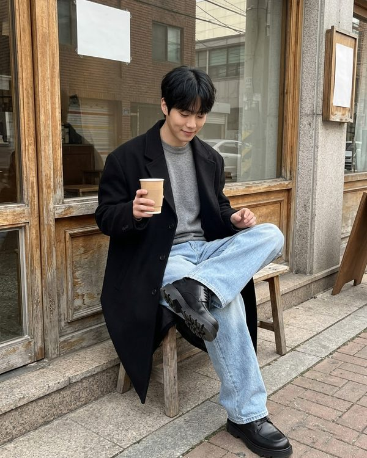
아이템룩 4더비 슈즈 하나로 끝나는 남자 겨울 코디11월 7일 · #더비 슈즈 데일리룩 4출근도 주말도 되는 2026년 남자 겨울 코디 no.2511월 7일 · #겨울 코디
데일리룩 4출근도 주말도 되는 2026년 남자 겨울 코디 no.2511월 7일 · #겨울 코디 주제별룩 4추워도 멋은 포기 못 하는 남자 겨울 스트릿 코디11월 7일 · #스트릿
주제별룩 4추워도 멋은 포기 못 하는 남자 겨울 스트릿 코디11월 7일 · #스트릿 데일리룩 4옷 잘 입는 남자들의 2026년 남자 겨울 코디 no.2411월 6일 · #겨울 코디
데일리룩 4옷 잘 입는 남자들의 2026년 남자 겨울 코디 no.2411월 6일 · #겨울 코디 주제별룩 4센스 있다 소리 듣는 남자 겨울 코디, 레더 자켓 편11월 6일 · #레더 자켓
주제별룩 4센스 있다 소리 듣는 남자 겨울 코디, 레더 자켓 편11월 6일 · #레더 자켓 데일리룩 3에스컬레이터 3초 만에 보는 남자 겨울 코디 3가지11월 6일 · #겨울
데일리룩 3에스컬레이터 3초 만에 보는 남자 겨울 코디 3가지11월 6일 · #겨울 데일리룩 3패션 참고하기 좋은 남자 겨울 코디 3가지11월 3일 · #겨울 코디
데일리룩 3패션 참고하기 좋은 남자 겨울 코디 3가지11월 3일 · #겨울 코디 주제별룩 3실패 없는 겨울 남자 배기 데님 코디11월 3일 · #배기 데님
주제별룩 3실패 없는 겨울 남자 배기 데님 코디11월 3일 · #배기 데님 피드룩 4터틀넥 하나로, 분위기 바꾸는 법 4가지11월 3일 · #터틀넥
피드룩 4터틀넥 하나로, 분위기 바꾸는 법 4가지11월 3일 · #터틀넥 데일리룩 4여자친구한테 사랑받는 남자 11월 코디11월 2일 · #데일리
데일리룩 4여자친구한테 사랑받는 남자 11월 코디11월 2일 · #데일리 주제별룩 4바람막이 하나로 꾸안꾸 끝, 남자 가을 바람막이 코디11월 2일 · #바람막이
주제별룩 4바람막이 하나로 꾸안꾸 끝, 남자 가을 바람막이 코디11월 2일 · #바람막이 피드룩 4영화 보러 가는 날, 같이 입기 좋은 커플룩11월 2일 · #커플룩
피드룩 4영화 보러 가는 날, 같이 입기 좋은 커플룩11월 2일 · #커플룩 데일리룩 4가을 끝나기 전에 꼭 입어봐야 할 남자 코디11월 1일 · #데일리
데일리룩 4가을 끝나기 전에 꼭 입어봐야 할 남자 코디11월 1일 · #데일리 피드룩 4숏패딩 하나로, 분위기 바꾸는 법 4가지11월 1일 · #숏패딩
피드룩 4숏패딩 하나로, 분위기 바꾸는 법 4가지11월 1일 · #숏패딩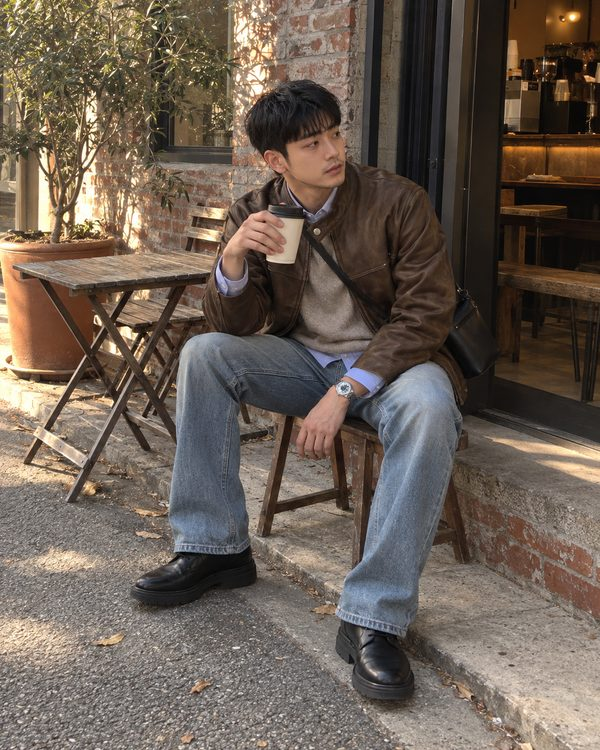
데일리룩 4주말에 뭐 입지? 남자 늦가을 코디10월 30일 · #데일리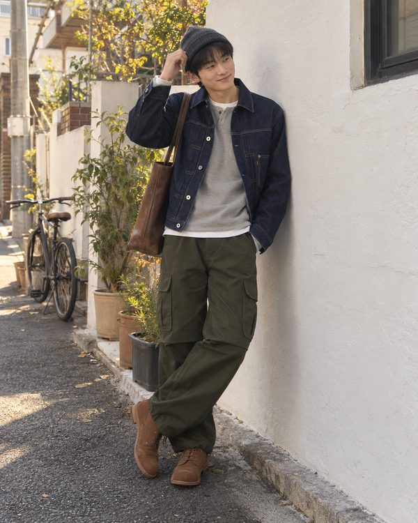
주제별룩 4카고 바지 뭐랑 입냐고? 남자 가을 카고 팬츠 코디10월 30일 · #카고 팬츠 피드룩 4가디건 하나로, 분위기 바꾸는 법 4가지10월 30일 · #가디건
피드룩 4가디건 하나로, 분위기 바꾸는 법 4가지10월 30일 · #가디건 데일리룩 4꾸민 듯 안 꾸민 듯, 남자 늦가을 코디10월 29일 · #데일리
데일리룩 4꾸민 듯 안 꾸민 듯, 남자 늦가을 코디10월 29일 · #데일리 주제별룩 4후드집업 하나로 분위기 4번 바꾸기, 남자 가을 후드집업 코디10월 29일 · #후드집업
주제별룩 4후드집업 하나로 분위기 4번 바꾸기, 남자 가을 후드집업 코디10월 29일 · #후드집업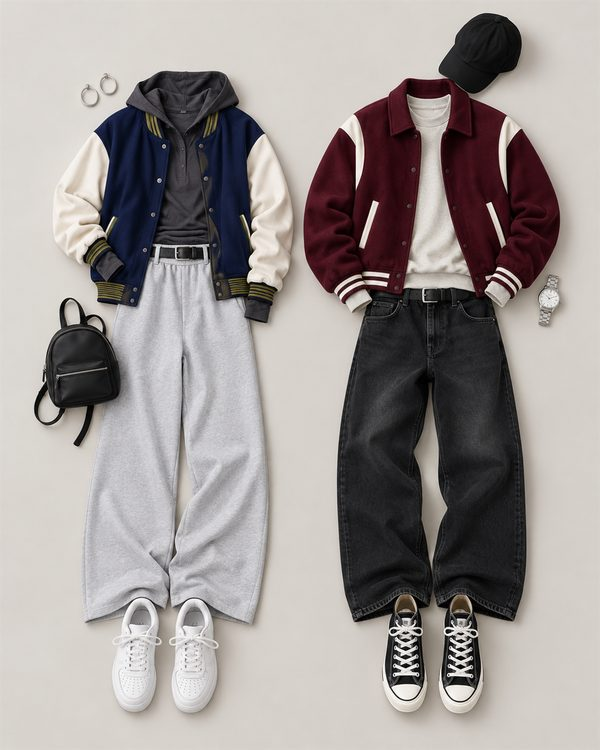
피드룩 4놀이공원 가는 날, 같이 입기 좋은 커플룩10월 29일 · #커플룩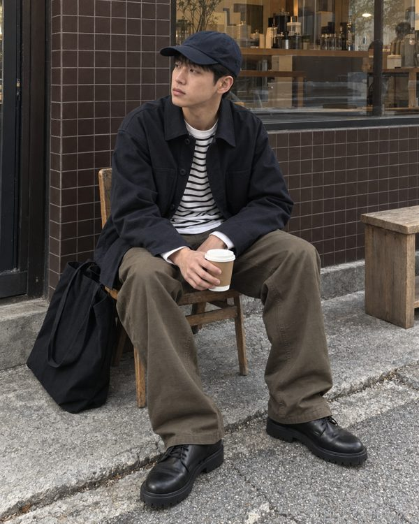
데일리룩 4찬바람 불 때 이렇게 입으면 끝, 남자 늦가을 코디10월 28일 · #데일리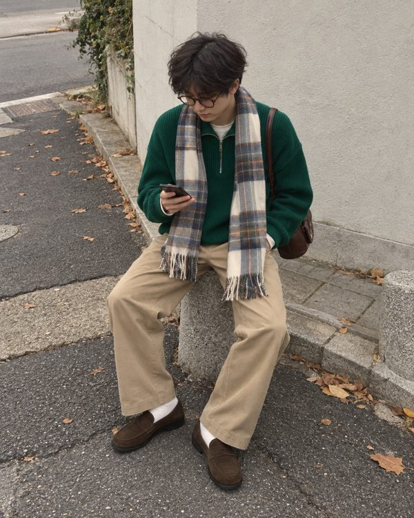
주제별룩 4목도리 하나로 분위기 달라지는 남자 머플러 코디10월 28일 · #머플러 데일리룩 4취향대로 골라 입는 남자 가을 코디 4가지10월 27일 · #데일리
데일리룩 4취향대로 골라 입는 남자 가을 코디 4가지10월 27일 · #데일리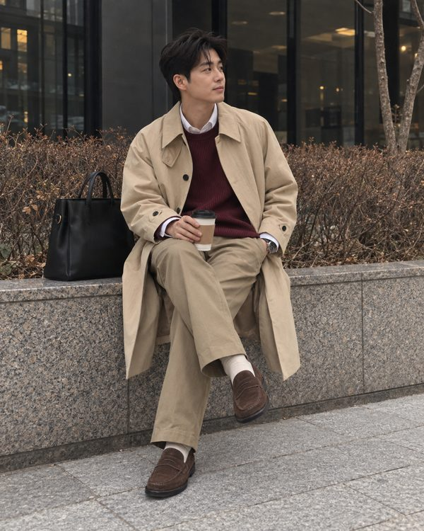
주제별룩 4가을 아우터 고민이면, 남자 맥코트 코디10월 27일 · #맥코트